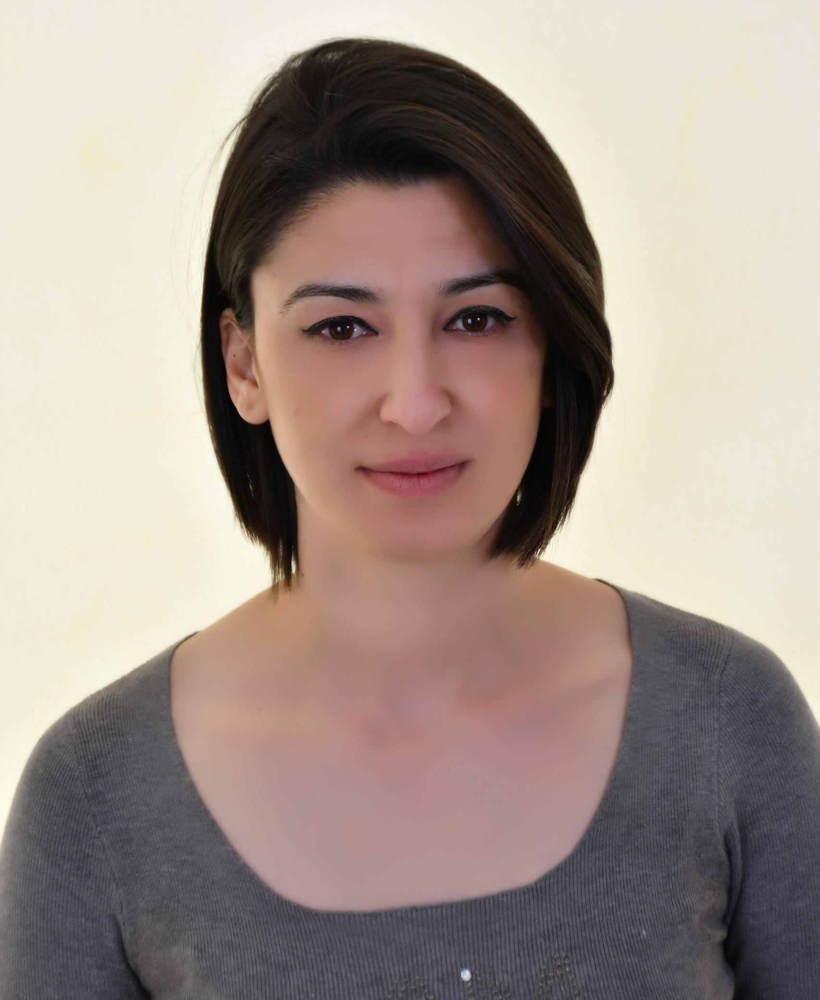

Ouerdia Arezki
Laboratoire de Mathématiques Blaise Pascal (LMBP), UMR CNRS 6620
Université Clermont Auvergne — IUT d'Aurillac, Département Science des données
Research Interests
My research focuses on the prediction and estimation of random fields, with applications to spatio-temporal and climate data, as well as observer-based stabilization for nonlinear dynamical systems with random delays.
- Prediction and estimation of autoregressive random fields and two-dimensional random coefficient autoregressive (2D-RCAR) models
- Impact of missing data on estimation and prediction accuracy
- Application of prediction methods to spatio-temporal and climate data (e.g., E-OBS humidity fields, temperature estimation in metropolitan France)
- Second-order stationarity conditions for 2D-RCAR models: asymptotic mean squared prediction error, asymptotic variance via vectorization and Kronecker product techniques
- Observer-based stabilization for nonlinear delayed dynamical systems using autoregressive models, with applications to autonomous vehicles
- Spatio-temporal process modeling for climate and economic applications
Publications
International Journals
- O. Arezki, S. Pinel, P.-M. Grollemund. "On the Asymptotic Behavior of the Multi-step Prediction Error for a Nonlinear Random Fields Model with Estimated Coefficients." Methodology and Computing in Applied Probability, 28, 28, 2026. Published
- A. Saidi, A. Hamaz, O. Arezki. "Estimation in nonlinear random fields models of autoregressive type with random parameters." Communications in Statistics — Theory and Methods, 53(1), 294–309, 2024. Published
- O. Arezki, A. Hamaz. "On linear prediction for stationary random fields with nonsymmetrical half-plane past." Communications in Statistics — Theory and Methods, 51(15), 5298–5309, 2022. Published
- A. Hamaz, O. Arezki, F. Achemine. "Impact of missing data on the prediction of random fields." Journal of Applied Statistics, 47(1), 132–149, 2020. Published
International Conferences
- O. Arezki. "Linear Prediction for Stationary Random Fields with an Application to Poverty Levels in Texas." 7th International Conference on Statistics: Theory and Applications (ICSTA 2025), Paris.
- O. Arezki. "Lead Prediction of 2D-RCAR Random Fields: Application to Spatio-Temporal Modeling." Journées de Statistique (JdS 2025), Marseille.
- O. Arezki, A. Hamaz. "Prediction Error of Nonlinear Spatial Process." ICCMA 2023, Mila, Algeria.
- O. Arezki, A. Hamaz. "Prediction Error of Nonlinear Random Fields Models." ICECMI 2023, Constantine, Algeria.
- A. Saidi, O. Arezki, A. Hamaz. "Estimation of two-dimensionally indexed Random Coefficient Autoregressive models." CNMPA, 2021.
- A. Hamaz, O. Arezki. "Influence des données manquantes sur la prédiction des champs aléatoires stationnaires." Modélisation Stochastique et Statistique (MSS 2019), pp. 144–147.
- O. Arezki, A. Hamaz. "Evolution of Contemporary Mathematics and their Impact in Sciences and Technology." ECMI-SciTech, 2017.
Accepted
- O. Arezki, P.-M. Grollemund. "A Score Test for Random Coefficient Variability in Two-Dimensional Spatial Autoregressive Models." 8th International Conference on Statistics: Theory and Applications (ICSTA 2026), London, United Kingdom, August 16–18, 2026. Accepted
- O. Arezki. "Asymptotic Normality for 2D-RCAR Models with Application to Climate Data." GEOMED 2026, Pamplona, Spain. Accepted
Conferences — Under Review
- O. Arezki. "A Truncated LS Test with χ²-Mixture Distribution for Detecting Random Coefficient Variability in Nonlinear Random Fields." 57es Journées de Statistique de la SFdS (JdS 2026), Université Clermont Auvergne, France. Under Review
- O. Arezki. "Misspecification-Robust Inference in Nonlinear Spatial Autoregressive Models: Sandwich Covariance, Confidence Regions, and Monte Carlo Evidence." 20th World Conference of the Spatial Econometrics Association (SEA) & 24th International Workshop in Spatial Econometrics and Statistics (SEW), Paris, France, June 17–18, 2026. Under Review
Journal Articles — Under Review
- O. Arezki. "Asymptotic Normality and Sandwich Variance Estimation for 2D-RCAR Models with Application to European Spatial Temperature Fields." Probability Theory and Related Fields, Springer, 2026. Under Review [HAL]
- O. Arezki. "Asymptotic Inference and Testing in Two-Dimensional Random Coefficient Autoregressive Models." Statistical Papers, Springer, 2026. Under Review [HAL]
Teaching
2025–2026 — Université Clermont Auvergne, IUT d'Aurillac (192h)
2024–2025 — Université de Perpignan, IUT de Carcassonne (192h)
2021–2024 — Université Mouloud Mammeri, Tizi-Ouzou (360h/an)
Curriculum Vitae
Positions
-
2025 – present
ATER, IUT d'Aurillac, Département Science des données
Université Clermont Auvergne — LMBP (UMR CNRS 6620) -
2024 – 2025
ATER, IUT de Carcassonne, Département Science des données
Université de Perpignan Via Domitia — LAMPS -
2021 – present
Maître de conférences, Faculté des sciences
Université Mouloud Mammeri, Tizi-Ouzou, Algérie
Education
-
2021
Doctorat en Mathématiques — Mathématiques Appliquées, Processus Aléatoires et Statistiques
Université Mouloud Mammeri, Tizi-Ouzou, Algérie -
2013
Master II en Mathématiques — Probabilités et Statistiques
Université Mouloud Mammeri, Algérie -
2011
Licence en Mathématiques
Université Mouloud Mammeri, Algérie
Qualifications & Certifications
Qualification CNU section 26. Coursera certifications: Data Analysis with R Programming, Supervised Machine Learning (Regression and Classification), Advanced Learning Algorithms.
Supervision
Participation in the co-supervision of Amel Saidi (2019–2022), PhD in Mathematics (Probabilités & Statistique): Estimation et Prédiction des Processus Spatiaux, Université Mouloud Mammeri.
Scientific Visits & Seminars
Seminar at LMBP, Clermont-Ferrand (February 9, 2026): "On the Asymptotic Behavior of the Multi-step Prediction Error for a Nonlinear Random Field Model with Estimated Coefficients and Applications."
Seminar at LAMPS, Perpignan (January 2025): "Central Limit Theorem for the MLE of 2D-RCAR Models: Application to Temperature Data Estimation in Metropolitan France."
Research visit at Université de Lorraine (June–July 2024), invited by Prof. Ali Zemouche, on statistical predictors for estimating missing data and delays in dynamical systems.